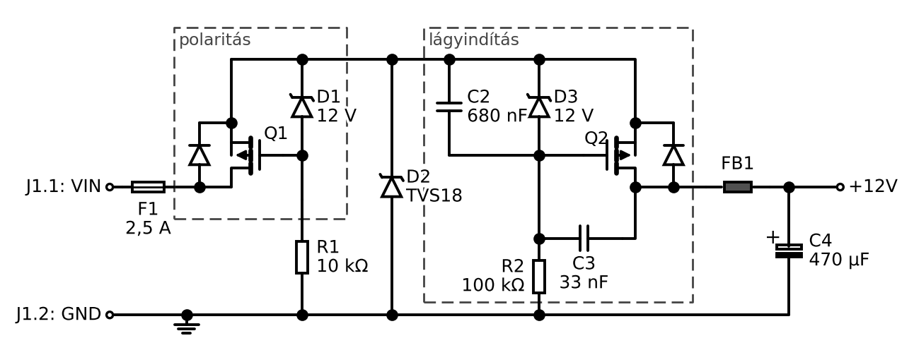
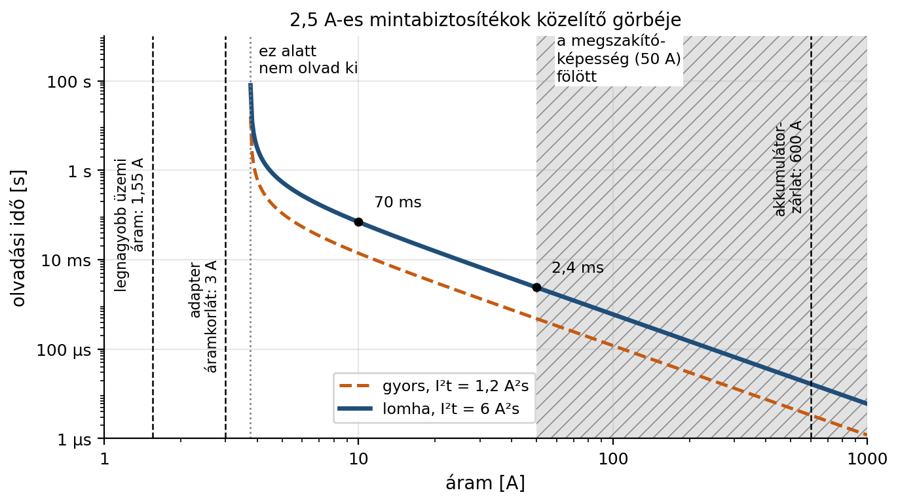
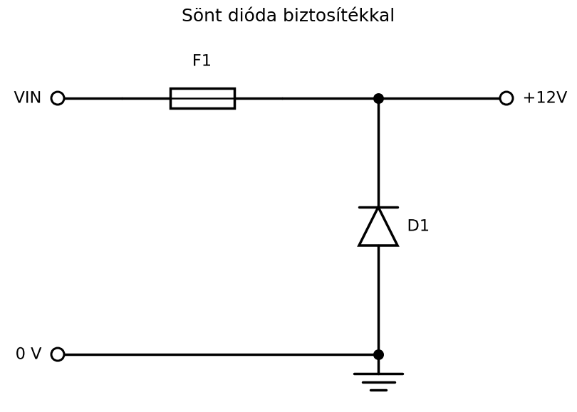
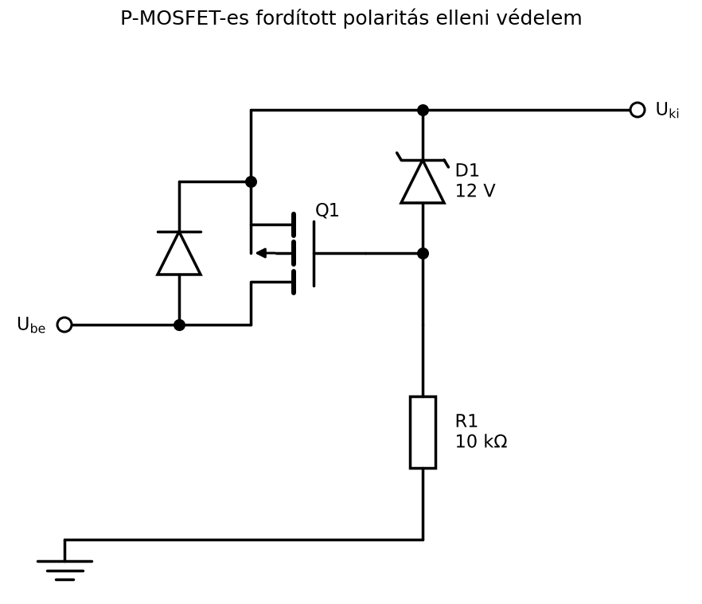
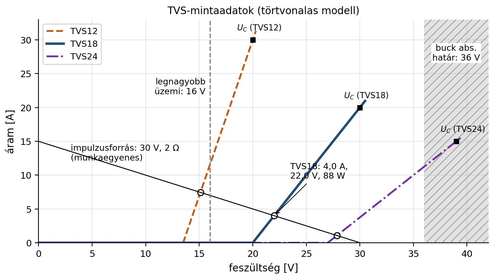
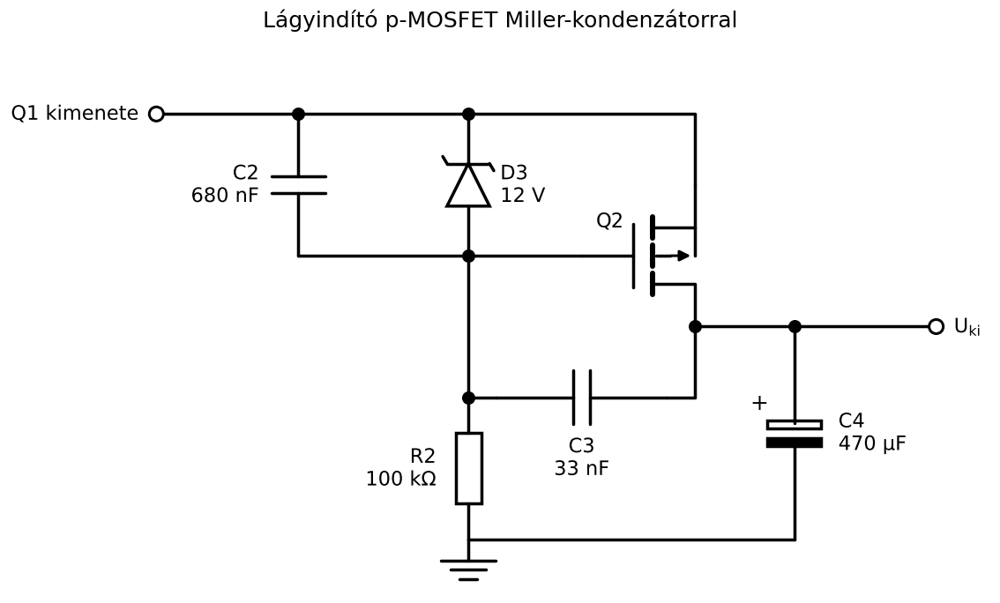

A tápbemenet az a pont, ahol a külvilág hibái először érik a kapcsolást: fordítva dugott adapter, zárlat, feszültségtüske, szikrázó csatlakozó. Ebben az alfejezetben lépésről lépésre felépíted a védelmi láncot. A végére:
Támaszkodunk a zárlati áramra (Energiatárolók veszélyei: akkumulátor, kondenzátor, induktivitás), az tranziensre (RC és RL töltés–kisütés, időállandó), a hot-plug tüskére (RLC tranziens: csillapítás és túllövés), a Egyenirányítás, védő- és fogókapcsolások, Schottky-dióda diódáira és a p-MOSFET-es high-side kapcsolóra (MOSFET kapcsolóként: low-side és high-side).
A szenzormodul első példányát a laborban rossz polaritással kötötte be valaki: a buck IC, a bemeneti elektrolit és a mikrovezérlő is tönkrement. A második példánynál a 12 V-os adapter bedugásakor szikra villant a csatlakozóban, és néha a labortáp is lekapcsolt. A harmadik egy gépjárműbe került, ahol a tápvonalon rövid tüskék jönnek.
Egyik hiba sem az áramkör „működésében” volt. Mindegyik a bemeneten dőlt el, néhány alkatrész árán.

A hálózatnevek: a J1.1 csatlakozólábon érkező, még védetlen bemenet neve VIN, a védelmi lánc mögötti, a modult tápláló síné +12V.
A sorrend nem véletlen:
| Fokozat | Mi ellen véd | Az ára |
|---|---|---|
| F1 biztosíték | tartós túláram, zárlat: tűz ellen | feszültségesés; csere kioldás után |
| Q1 polaritásvédő | fordított bekötés | néhány tíz millivolt, egy MOSFET |
| D2 TVS | rövid túlfeszültség-tüske | szivárgás, korlátozott energia |
| Q2 lágyindító | bekapcsolási áramlökés | még egy MOSFET, késleltetés |
| FB1, C4 szűrő | zavarok mindkét irányban | méret, bekapcsoláskor áram |
A biztosíték a forráshoz legközelebb van, mert csak a mögötte lévő részt védi. A TVS a polaritásvédő mögött áll, így fordított bekötéskor nem kap feszültséget. A ferrit (Valós induktivitás és ferritgyöngy) a nagyfrekvenciás zavart fojtja.
Továbbvitt eredmény. A tápbemeneti védelmi lánc sorrendje: biztosíték → polaritásvédő → TVS → (lágyindítás) → szűrő → szabályzó. Erre épít az ESD- és túlfeszültség-védelem az áramkörben, a Követelményektől a blokkdiagramig és az 1. záróprojekt: védett tápegység 12 V-ról 5 V-ra és 3,3 V-ra.
Az olvadóbiztosítékban egy vékony vezetőszál melegszik, és túláramnál elolvad. Ez egyszeri védelem. Jellemzői:
Definíció. Az (olvadási integrál) az áram négyzetének „görbe alatti területe” az idő függvényében, egysége . Nagyon rövid impulzusnál a szálból nincs idő elvezetni a hőt, ezért az olvadáshoz mindig körülbelül ugyanannyi energia, vagyis ugyanakkora kell. Állandó áramnál egyszerűen , így a közelítő olvadási idő nagy áramnál .
Egy üres kondenzátor rákapcsolásakor ez zárt alakban adódik. A feltöltése közben a soros -en éppen energia lesz hővé (RC és RL töltés–kisütés, időállandó), a disszipáció pedig időbeli összege, ezért:
Mértékegység: . Kisebb hurokellenállás nagyobb -t ad. A biztosíték olvadási integrálja ennek többszöröse legyen; ismételt impulzusokhoz a gyártó adja a megengedett arányt.

Az ábrán látszik a legfontosabb csapda: ha a forrás csak 3 A-t tud adni (áramkorlátos adapter), a 2,5 A-es biztosíték sosem olvad ki, a zárlatot az adapter védelme kezeli. A biztosíték ott értelmes, ahol a forrás sok áramot tud adni – például akkumulátor, ahol viszont a megszakítóképesség válik döntővé ( A zárlati áram 50 A-es megszakítóképesség mellett nem megengedett).
Definíció. A visszaálló biztosíték (polimer PTC, positive temperature coefficient) olyan ellenállás, amelynek értéke melegedve ugrásszerűen megnő. Adatai: tartóáram (ennél biztosan nem old ki), kioldóáram (efölött biztosan kiold, de lassan), kezdeti és kioldás utáni legnagyobb ellenállás, kioldott disszipáció .
Korlátai: lassú (másodpercek), kioldás után is folyik rajta maradékáram, a tartóárama melegben erősen csökken, és minden kioldás után ellenállása nagyobb maradhat. Érzékeny félvezetőt zárlat ellen nem véd meg elég gyorsan.
Soros dióda (Egyenirányítás, védő- és fogókapcsolások, Schottky-dióda): egyszerű, fordítva semmi sem folyik, de állandó esést és hőt okoz.
Sönt dióda biztosítékkal: a dióda normál esetben zár (nincs veszteség), fordított polaritásnál rövidre zárja a bemenetet, és kiolvasztja a biztosítékot.

Ára: a diódának el kell viselnie a zárlati áramot (nagyobb , mint a biztosítéké), a terhelés néhány milliszekundumig kb. −1 … −2 V-ot kap (sok IC abszolút határa −0,3 V körüli, adatlapfüggő), és a biztosítékot cserélni kell.
P-csatornás MOSFET: a soros elem csatornája szinte veszteségmentes.

A trükk: a MOSFET fordítva van beépítve a megszokott high-side kapcsolóhoz képest, a drain néz a bemenet felé. (A test-dióda a A MOSFET működése és adatlapja szerint p-csatornásnál a draintől a source felé vezet.)
Gondolkodj előre: mi történne, ha Q1 source-a nézne a bemenet felé? (A választ az interaktív ábra „hibásan bekötött” esete mutatja: fordított polaritásnál a test-dióda kinyit, a terhelés fordított feszültséget kap.)
A D1 Zener és R1 a gate védelme: az MP1 mintaadat szerint V, a tesztimpulzus viszont 30 V. A Zener az -t 12 V-ra korlátozza, R1-en a többlet esik. A vezetési veszteség , a garantált értékkel (Az adatlap olvasása): 12 V-on V, ezért a 10 V-os adat (55 mΩ) érvényes; 9 V-on viszont csak a 4,5 V-os (85 mΩ).
A MOSFET-es védelem nem akadályozza meg a visszafolyó áramot: bekapcsolt állapotban mindkét irányba vezet, így ha a bemenet rövidre záródik, a kimeneti kondenzátor visszasül. Erre való az ideális dióda vezérlő (ideal diode controller): IC, amely a MOSFET feszültségéből figyeli az áramirányt, és fordulásnál gyorsan lekapcsol (általában n-MOSFET-tel és töltéspumpával).
Továbbvitt eredmény. P-MOSFET-es polaritásvédelem: drain a bemenet, source a kimenet felé, gate ellenálláson át a földre, source–gate Zener; veszteség a tényleges -hez garantált értékkel; visszáramot nem tilt. Használja az 1. záróprojekt: védett tápegység 12 V-ról 5 V-ra és 3,3 V-ra.
Definíció. A TVS-dióda (transient voltage suppressor) lavinaletörésre méretezett, nagy impulzusáramot elviselő dióda a sín és a föld között. Adatai:
Törtvonalas modellben , ahol . Egy forrásfeszültségű, forrásellenállású impulzusra:
A választás négy feltétele: (1) a legnagyobb tartós üzemi feszültség; (2) a fogófeszültség a várható impulzusáramnál a védett alkatrészek abszolút határa alatt; (3) és az energia a megengedett értéken belül, az adott hullámalakra; (4) egyirányú vagy kétirányú, a negatív tüskék szerint.

A szenzormodul saját, egyszerűsített tesztimpulzusa 30 V, 2 Ω, 1 ms (nem szabványi). A gépjárműves környezet szabványos vizsgáló impulzusai (ISO 7637-2, ISO 16750-2; ellenőrizendő: a hatályos kiadások) jóval nagyobb energiájúak is lehetnek, azokra külön méretezés kell. A hosszú kábelre és interfészekre vonatkozó ESD- és tüskevédelmet az ESD- és túlfeszültség-védelem az áramkörben tárgyalja. Kis áramú ágon a Zener és soros ellenállás is elég (Zener-dióda, LED és fotodióda).
Továbbvitt eredmény. TVS-választás: ; (a várható áramnál) a védett elemek abszolút határa alatt; a hullámalakra elég; helye a polaritásvédő mögött. Felhasználja az ESD- és túlfeszültség-védelem az áramkörben.
Az üres bemeneti kondenzátor bekapcsoláskor rövidzárnak látszik: az áramot csak a hurok kis ellenállása korlátozza. 470 µF, 16 V, 0,2 Ω (mintaadat): A, µs, A²s. A következmény: szikra, a csatlakozó érintkezőinek kopása, az adapter lekapcsolása, a biztosíték öregedése.
Feszültség alatti bedugásnál (hot-plug) a kábel induktivitása is szerepet kap. A RLC tranziens: csillapítás és túllövés alfejezetben láttuk: 1 µH, 50 mΩ, 10 µF kerámia 12 V-on 21,1 V-os, 16 V-on 28,2 V-os csúcsot ad; 0,39 Ω soros ellenállással 12,5 V, 100 µF-os, 0,33 Ω-os csillapítóággal 12,85 V. A láncban a TVS ezt a tüskét is fogja, az elektrolit ESR-je pedig csillapít.
Három korlátozási módszer:
A kondenzátor árama (Kapacitás, töltés és energia). Ha a kimenet idő alatt egyenletesen emelkedik -ra:
A MOSFET eközben a veszélyes lineáris üzemben van. Benne energia lesz hővé – a felfutási időtől függetlenül. A lassítás a csúcsteljesítményt csökkenti, az energiát nem; ellenőrizni kell az SOA-t (Biztonságos működési tartomány, lavina és induktív terhelés). Ha a terhelés közben is fogyaszt (), az energia -vel nő.

A működés a Miller-plató (Kapcsolási folyamat: gate-töltés, Miller-plató és meghajtás): amíg a drain emelkedik, közel állandó ( V az MP1-nél 1 A körül), az R2-n folyó teljes gate-áram a C3-at tölti:
Mértékegység: . Két csapda:
Továbbvitt eredmény. Lágyindítás: , a kapcsolóban hő; Miller-kondenzátorral ; hot-plughoz source–gate kondenzátor. Használja az 1. záróprojekt: védett tápegység 12 V-ról 5 V-ra és 3,3 V-ra és a 3. záróprojekt: MOSFET-es meghajtó induktív terheléshez.
Definíció. A brown-out a tápfeszültség rövid beesése, amely alatt a mikrovezérlő még nem áll le tisztán, de már hibásan működhet. A feszültségfigyelő (supervisor) IC komparátorral és referenciával (Komparátor, hiszterézis és aktív szűrők) resetben tartja a processzort, amíg a sín a küszöb alatt van. Mintaadat: 3,00 V lefelé, 50 mV hiszterézis, 100 ms késleltetés; open-drain kimenet felhúzóval (DAC, PWM, feszültségreferenciák és ratiometrikus mérés).
Egy rövid bemeneti kiesést a bemeneti kondenzátor hidal át. Állandó teljesítményű fogyasztónál (buck) az energiamérlegből
Itt a kiindulási, a még elfogadható feszültség. Mértékegység: . 470 µF-dal, 12 V-ról 9 V-ig, 2,78 W-nál 5,3 ms. A Q1/Q2 MOSFET-ek visszafelé is vezetnek, ezért rövidre zárt bemenetnél ez a tartalék elvész; soros dióda vagy ideális dióda vezérlő megtartja.
1. Legnagyobb üzemi áram. 16 V-on a relé 40 mA, a tartósan bekapcsolt szolenoid A, a LED 7 mA, a buck A: 1,55 A. Józanész: ez több, mint a 12 V-os 1,27 A, mert a szolenoid ellenállásos terhelés.
2. Biztosíték. A → 2,5 A, lomha. A bekapcsolási 0,30 A²s a lomha mintabiztosíték (6 A²s) 5%-a, a gyors (1,2 A²s) 25%-a. Feszültség: 32 V egyenfeszültség; 30 V-os tesztimpulzus alatt rendben.
3. Polaritásvédelem. 1,27 A-nél a Si dióda 0,97 V és 1,23 W, a Schottky 0,48 V és 0,61 W, a Q1 mV és 89 mW. 9 V-os bemeneten 1,08 A-rel a diódák után 8,06, illetve 8,54 V marad, Q1 után 8,91 V. A gate-ág: 30 V-os impulzusnál mA, a Zenerben mW.
4. TVS. TVS18 (18 V / 20 V / 30 V / 20 A, 600 W, mintaadat): Ω; A; V; W, 1 ms alatt 88 mJ. Ez a puffer nélküli eset (a TVS egyedül viszi az impulzust): a Q2 mögötti 470 µF-os elektrolit az 1 ms nagy részét felveszi, ezért az 1. záróprojekt: védett tápegység 12 V-ról 5 V-ra és 3,3 V-ra teljes láncmodelljében a TVS csúcsárama csak kb. 2,3 A, az energiája kb. 15,6 mJ. A 88 mJ tehát óvatos méretezési érték (ugyanez a bemeneti TVS szerepel az ESD- és túlfeszültség-védelem az áramkörben energia-összevetésében; a külső jelbemenetek kis ESD-védője és soros ellenállása ott külön feladat). Az V a 16 V felett, a 22 V a buck IC 36 V-os (mintaadat) és a MOSFET 40 V-os határa alatt. A bevezető 4,3 kΩ / 1 kΩ-os VIN-figyelő osztón (Szintillesztés, bemenetvédelem és pergésmentesítés) még V jelenik meg, tehát a Schottky-határoló továbbra is kell.
5. Lágyindítás. Cél: 470 µF, kb. 5 ms. µA, a meredekség V/ms, nF → E6 33 nF. Az MP1 belső = 80 pF elhanyagolható: V/ms, A, ms. A Q2-ben mJ keletkezik, átlagban kb. 7 W-tal, az elején W-tal; ezt a valós alkatrész SOA-görbéje (kb. 10 ms-os impulzus) alapján kell jóváhagyni – az MP1-hez itt még nincs SOA-mintaadatunk. Az 1. záróprojekt: védett tápegység 12 V-ról 5 V-ra és 3,3 V-ra felvesz egyet, és a lágyindítást a sín teljes kapacitásával, meleg újraindításra ellenőrzi (ott a gate-ellenállás 150 kΩ-ra nő).
Biztosíték és polaritásvédelem:
from elkit import power
from elkit import extra_elch17 as x
i_max = 40e-3 + 16 / 12 + 7e-3 + 2.775 / 16
print(f"I_max = {i_max:.2f} A, I_n >= {i_max / (0.75 * 0.85):.2f} A")
i2t = x.rc_inrush_i2t(16.0, 470e-6, 0.2)
for kind, f in x.FUSE_MINTA.items():
print(f"{kind:5s}: lökés/I²t = {100 * i2t / f.i2t:4.1f} %, "
f"10 A-nél {x.fuse_melt_time(10, f) * 1e3:.0f} ms")
for name, (du, p) in power.polarity_losses(1.27).items():
print(f"{name:9s} ΔU = {du:.3f} V, P = {p:.3f} W")I_max = 1.55 A, I_n >= 2.44 A
gyors: lökés/I²t = 25.1 %, 10 A-nél 14 ms
lomha: lökés/I²t = 5.0 %, 10 A-nél 70 ms
Si dióda ΔU = 0.968 V, P = 1.229 W
Schottky ΔU = 0.478 V, P = 0.608 W
p-MOSFET ΔU = 0.070 V, P = 0.089 WA TVS-ek a legnagyobb üzemi feszültségen és az impulzuson:
for name, t in x.TVS_MINTA.items():
i16, _, p16 = power.tvs_operating_point(16.0, 2.0, t.u_br, t.u_c, t.i_pp)
i, u, p = power.tvs_operating_point(30.0, 2.0, t.u_br, t.u_c, t.i_pp)
print(f"{name}: 16 V-on {p16:4.1f} W | impulzus: {i:.2f} A, {u:.1f} V, {p:.0f} W")TVS12: 16 V-on 15.5 W | impulzus: 7.44 A, 15.1 V, 112 W
TVS18: 16 V-on 0.0 W | impulzus: 4.00 A, 22.0 V, 88 W
TVS24: 16 V-on 0.0 W | impulzus: 1.07 A, 27.9 V, 30 WA TVS12 a 16 V-os tartós üzemben 15,5 W-ot nyelne:
elégne. A bekapcsolási lökés szimulációja
(elkit.transient), majd a lágyindítás gate-szintű
modellje:
from elkit import transient as tr
for r in (0.2, 5.2): # vezeték; hideg NTC-vel
c = tr.Circuit().add_vsource("U1", "be", "0", tr.step(0.0, 16.0))
c.add_resistor("Rs", "be", "a", r).add_capacitor("C4", "a", "0", 470e-6)
res = c.simulate(8 * r * 470e-6, r * 470e-6 / 500)
i = res.i("Rs")
print(f"R = {r} Ω: csúcs {i.max():5.1f} A, I²t = {power.i2t(res.t, i):.3f} A²s")
for label, kw in (("engedélyezett", {}), ("hot-plug, C2 nélkül", {"mode": "hotplug"}),
("hot-plug, 680 nF", {"mode": "hotplug", "c_gs": 680e-9})):
s = x.pmos_soft_start(u_in=16.0, t_end=40e-3, **kw)
print(f"{label:20s} csúcs {s.i_peak:4.1f} A, E = {s.energy(16.0) * 1e3:.0f} mJ")R = 0.2 Ω: csúcs 80.0 A, I²t = 0.301 A²s
R = 5.2 Ω: csúcs 3.1 A, I²t = 0.012 A²s
engedélyezett csúcs 1.7 A, E = 60 mJ
hot-plug, C2 nélkül csúcs 32.7 A, E = 60 mJ
hot-plug, 680 nF csúcs 1.1 A, E = 60 mJAz energia mindhárom lágyindításnál mJ, a csúcsáram viszont harmincszoros különbségű. (A 33 A a mintamodell értéke; a valós alkatrész a 4 A-es megengedett árama fölött sérülhet.)
x.pmos_soft_start-tal a legkisebb E6-os
-t,
amellyel 16 V-os hot-plugnál a csúcsáram 1,5 A alatt marad.
Elfogadható-e ez a legrosszabb küszöbű
(
V) alkatrészre?A tápbemenet védelmi lánca sorban: biztosíték, polaritásvédő, TVS, lágyindítás, szűrő, majd a szabályzó. A biztosítékot az üzemi áram (derating), a bekapcsolási , az egyenfeszültség és a forrás zárlati árama (megszakítóképesség) szerint választjuk; a visszaálló PTC lassú, és kioldva is maradékáramot enged. A p-MOSFET-es polaritásvédelemben a drain a bemenet felé néz, a gate-et ellenállás és source–gate Zener védi, a veszteség . A TVS tartós üzemi feszültsége legalább a legnagyobb bemenet, a fogófeszültsége a védett elemek határa alatt, a hullámalakra elég legyen. A bekapcsolási áramot lágyindítás korlátozza, a kapcsolóban hő keletkezik; hot-plughoz source–gate kondenzátor kell. Rövid kiesés ellen feszültségfigyelő és bemeneti energiatartalék véd.
1. A; A²s.
2. Schottky: W; MOSFET: W, hatszor kevesebb.
3. ms, a meredekség legfeljebb 2,27 V/ms. µA, nF → E12: 39 nF ( V/ms, 0,48 A).
4. A; V; W. A 36 V-os határ alatt van, a 600 W-os adat alatt is, de ez az adat csak a megadott hullámalakra szól: hosszabb impulzusnál az adatlapi teljesítmény–időgörbét kell nézni.
5. mA maradékáram (a terhelés tehát nincs teljesen leválasztva). V, W.
6.
for c2 in (100e-9, 150e-9, 220e-9, 330e-9, 470e-9, 680e-9):
s = x.pmos_soft_start(u_in=16.0, mode="hotplug", c_gs=c2, t_end=60e-3)
print(f"{c2 * 1e9:3.0f} nF: csúcs {s.i_peak:.2f} A, U_SG(0) = {s.u_sg[0]:.2f} V")100 nF: csúcs 1.69 A, U_SG(0) = 3.96 V
150 nF: csúcs 1.62 A, U_SG(0) = 2.88 V
220 nF: csúcs 1.52 A, U_SG(0) = 2.09 V
330 nF: csúcs 1.39 A, U_SG(0) = 1.45 V
470 nF: csúcs 1.26 A, U_SG(0) = 1.05 V
680 nF: csúcs 1.11 A, U_SG(0) = 0.74 VA modell tipikus küszöbbel (1,7 V) már 330 nF-dal 1,5 A alatt marad. Egy 1 V-os küszöbű példány viszont V-nál azonnal nyitni kezd: a garantált minimumra tervezve 680 nF kell. A tipikus érték nem garancia.
7. µF → 1000 µF. Ez kétszerezi az -t, a lágyindítás idejét ( újraméretezése) és a kapcsoló energiáját; a polaritásvédőn át visszafolyó áramot is figyelembe kell venni.